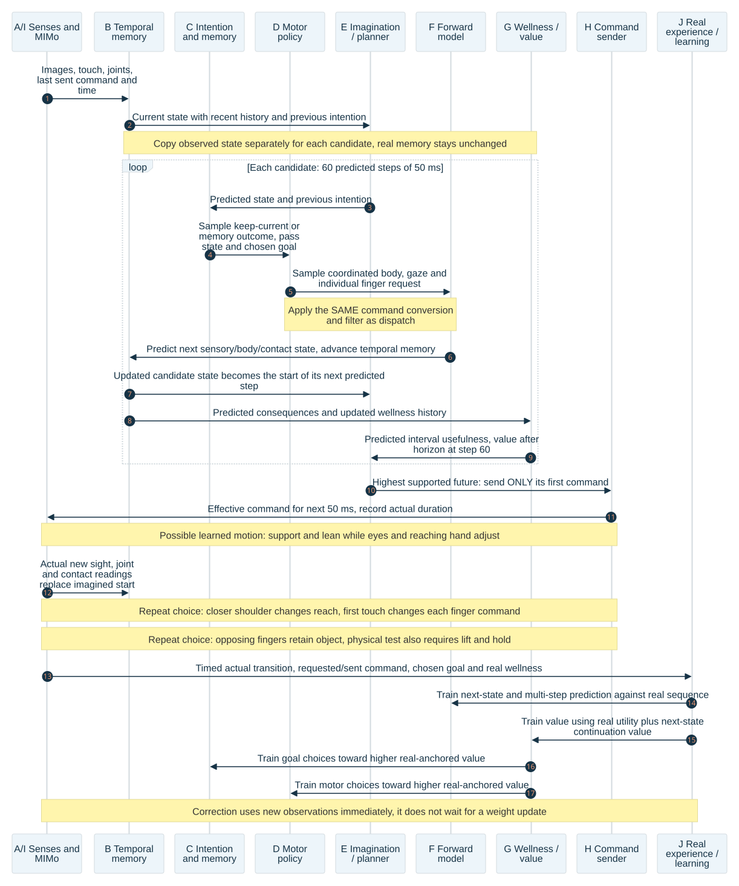

3 seconds: planning
Predict a whole possible movement: 60 linked changes of 50 ms each. A changed shoulder position must affect the later reach.
UEMA • revised design • 27 October 2026
The aim is to learn how to move closer, reach, and grasp—without being given a lean–reach–close routine.
One central design decision remains: which existing wellness measurements should be added across time to train choices. Section 5 explains the conflict and the comparison that will settle it. This is a new design document. The previous report stays unchanged. The design below replaces that report’s hand-built movement-table search and fixed intention-duration proposal. Existing learning must be preserved. Implementation and training remain paused.
A policy is a learned rule for choosing a command from what the model currently knows. UEMA already has one: its motor controller is a small neural network that reads the Transformer’s output. The Transformer combines recent sensations into a useful memory. A state is its current summary of the body and surroundings. An intention is the outcome it is trying to bring about. Wellness is UEMA’s set of signals for things such as bodily condition, control and learning progress. The problem is how these parts learn and use a continuing movement together.
Reading path: sense → remember → choose → imagine → compare → act → sense again. Scroll the diagram sideways on a small screen.
What changes: the imagined body, contacts, goal and memory must advance together. A later benefit must teach the earlier choice that helped cause it. The same command meaning must be used in prediction and in the body.
What stays: UEMA’s senses, temporal core, motor policy, forward model, wellness channels and saved experience. Extra prediction or value outputs can be small neural networks. MLP means a network with several layers of calculations. Being an MLP does not make them unable to learn a sequence.
Predict a whole possible movement: 60 linked changes of 50 ms each. A changed shoulder position must affect the later reach.
Send one command. Read the new sensations. Choose the next command from the actual result. This interval is a design target that must be checked against the model’s speed.
Ten small decisions make one easy-to-view “movement moment.” Eyes, trunk and each finger can change within it. It is not a command lock.
Immediate correction does not require immediate retraining. If a finger touches sooner than expected, the next command uses the new touch reading. Later, learning improves how that situation is predicted and handled. The model can react using its existing weights while a learning update waits.
The “controller for 250 ms, then planner for 250 ms” description is not a universal rule in the inspected code. Planner timing and command holding are configurable, and a planner command can replace the controller proposal. The revised design gives the planner one short command to send, rather than two owners taking turns with the body.
Fifty milliseconds here means simulated movement time, not a measured inference speed. First measure the full sensing, policy, 60-step prediction, selection and dispatch cost on the intended hardware. Select the number of candidate futures that fits that budget. In a simulator, inference may take longer in wall-clock time while simulation waits; record that slowdown. A physical real-time system needs a qualified deadline and a trained feedback controller that can continue if planning misses it. A frozen long command is not an acceptable substitute.
Physics still uses its own smaller integration step and contact constraints. Three seconds covers this example, not all tasks. A learned estimate of benefit after those three seconds keeps the planner from treating the horizon as the end of life.
The lanes below are the active parts of the map above. The repeated loop is the mechanism. Leaning, reaching and closing are possible learned results of that loop; they are not instructions inserted into the controller.
Read down: 1. Observe. 2. Imagine linked commands. 3. Compare their results. 4. Send the first command. 5. Observe again and learn. Scroll sideways to see all nine lanes, or open the full-size diagram below.

Open full-size diagram · Mermaid source
The touch reading enters the temporal memory along with the last sent command and joint positions. The motor policy receives that new state. It can reduce the index command while continuing the thumb, other fingers and body support. The forward model predicts those changes together; the planner compares their later results. Only the first short command is sent. No “index touched, now curl thumb” rule is supplied by this design.
Before this response is learned, the policy may choose poorly. Real experience must then teach both the consequence of that choice and its later usefulness. During a physical test, the simulator calculates contact forces that resist overlap between a finger and the ball. Some overlap can occur within the solver’s tolerance, so the test must measure it. The posed pictures below were checked geometrically; they were not produced by a physical grasp simulation.
The red ball starts beyond arm-only reach. Moving the trunk carries the shoulder closer, so the hand can get around the ball. The caregiver is hidden. These are MIMo pose renderings with the supporting hand corrected against the armrest in every frame, not a recorded learned performance. Armrest clearance measurements.


| Illustrated time | Coordinated movement | What the learner must discover |
|---|---|---|
| 0–0.5 s | Eyes face the ball. Right shoulder turns, elbow opens, fingers stay open. | Arm movement alone does not put the hand around the ball. |
| 0.5–1.0 s | Left palm, seat and feet provide the intended support as the trunk begins to lean. | Supporting the body can make a later reach useful, even before the hand reaches the object. |
| 1.0–1.5 s | Trunk motion carries the shoulder forward; shoulder and elbow keep adjusting. | Whole-body motion changes the hand’s reachable space. |
| 1.5–2.0 s | The already oriented open hand descends from above the ball. | Approach direction, open fingers and timing matter together. |
| 2.0–2.5 s | Thumb approaches one side; individual fingers bend around other sides. | Different fingers can need different amounts and timing of movement. |
| 2.5–3.0 s | The rendered hand shape stays steady. | A physical grasp must also resist slipping and support the object’s load. |
Timing honesty: these are illustrative three-second timings, not measured infant timing or measured UEMA speed. The rendered ball stays on its stand. The actual success test must go farther: lift a free object and hold it without the stand.


The earlier geometry check found no hand–ball overlap at the sampled poses. A denser check sampled 600 points along the interpolated path at 5 ms intervals. Its smallest hand–ball gap was about 0.0016 mm. That tiny positive gap is useful for inspecting these pictures; it is not a demonstrated margin for a moving physical grasp.
The starting ball surface is 36.2 cm from the shoulder, beyond the 32.6 cm generous arm-and-hand reach estimate. The illustrated shoulder advances 16 cm. Final thumb contact directions oppose the ring and little finger directions by about 140° and 163°. Finger bend angles differ by joint; they are not one shared curl. The contact and distance records belong to the earlier pose-fitting work. This document reuses those assets without changing them or prescribing their joint angles as training actions.
The samples do not prove collision-free motion at every instant, support forces, friction or object retention. Physical qualification must measure those separately. Dense path record · Pose and joint record · Independent hand review.
The recommendation is one connected system with three learning jobs: predict what a command will do; estimate how useful its later results will be; and choose commands that lead to better results. They share the same timeline and command meaning.
At each decision, rebuild the state from recent eye images, touch, joint readings, sent commands and their times. Include the previous intention, current wellness history and any command filter that has not finished responding. A command filter limits or smooths a request before it reaches the body; its unfinished effect matters to the next prediction. The state must tell apart “finger approaching the ball” and “finger already pressing it,” even when the pictures look similar.
Use UEMA’s existing temporal Transformer for this memory. When training from a saved sequence, give it the past before the chosen moment. Do not give it the later answer. In imagined movement, update that memory with predicted sensations after each predicted command.
The intention part considers keeping the current outcome or selecting an outcome represented in real experience. The motor policy uses the current state and that chosen outcome. It outputs one coordinated request for the body, eyes and independently controlled finger joints. A shared input lets shoulder, gaze and fingers depend on each other.
During learning, small sampled variations around the policy’s predicted command create different attempts within the existing physical limits. During evaluation, record whether sampling is used and keep it the same in the comparisons. The policy’s outputs are learned; there are no named lean, reach or close stages.
A learned intention can last through many decisions because continuing it is useful. It may change when the situation changes. There is no fixed six-second lease. Goal changes remain part of the experience record; they do not erase the consequences of earlier commands.
The forward model receives the current state, the effective command that would reach the body, and its duration. It predicts the next body and sensory state, including contact and the consequences needed by wellness. The next policy call uses that predicted state. Repeating this sixty times makes a three-second future.
Several futures come from different sampled policy commands and intention choices. The planner scores their predicted consequences, including benefit beyond the three-second boundary. It chooses a future after accounting for prediction errors measured on real examples, and sends only its first short command. If its predictions are too unfamiliar to compare, the learned feedback policy continues within the existing physical limits while more real experience is collected. A new real observation then replaces the imagined starting point.
Use the same command conversion when predicting and when sending commands to the body. If a filter slows a finger request, the prediction must include that delay. An ignored command field must not be allowed to improve the predicted score.
Save the starting observations, previous and chosen intentions, requested command, command actually sent, elapsed time, next observations and actual wellness readings. Sample continuous windows from this experience. First predict the next readings. Then predict several steps without being given the correct intermediate readings, and compare each prediction with what really happened.
Start with short prediction spans and increase the trained span to three seconds as accuracy improves on saved sequences that were kept out of training. Keep the short-span lessons: a model that predicts the final arm position but misses the first touch still needs work. Add examples around first contact, slipping, objects being partly hidden and small disturbances so these moments are not lost among easier steady poses.
A transient prediction error becomes a learning example. Do not smooth away a real sudden contact to make the graph prettier. Use the new real reading to correct the next command. Keep actual physical harm limits separate from prediction error.
A value predictor estimates the useful results that can follow a choice. It learns from actual wellness readings and later states. For example, a body shift may bring little immediate benefit. If it leads to a state from which the learned policy can grasp successfully, that later benefit raises the value of the earlier shift.
The motor policy is trained to choose commands with higher predicted value. The intention policy is trained to choose outcomes with higher value too. This is different from copying every action the old planner happened to choose. Bad choices must be able to become less likely.
The value estimate is checked against real outcomes. Imagination can propose promising movements, but it does not turn its guesses into recorded successes. Preserve real failures as well as successes so that value cannot improve merely by forgetting failures.
Use the existing wellness channels with their recorded meanings. Do not quietly add a reward for moving the hand toward the red ball or for following the six illustrated moments. A low-level joint limit is part of the body’s rules; a hidden grasp routine would supply the ability we are trying to learn.
There is a necessary objective check: do the existing wellness signals make useful, retained control worth learning? Compare actual channel readings during passive comfort, varied interaction and successful control. Trace the source of each difference. If inactivity always scores better, training cannot be expected to invent a preference for grasping. The source also uses different scores for immediate motor input and remembered-goal ranking; those cannot silently become one training reward. Correct that mismatch with the UEMA specification before claiming the learning design is complete.
The object must also remain identifiable through changing eye views and partial hand occlusion. The model must keep track of the same ball as its eyes move and its hand hides part of it. It learns by matching what it saw before with what appears next, while accounting for eye and head motion. If it is unsure, it must keep that uncertainty. Simulator object coordinates may score an evaluation, but must not become secret acting inputs.
Visual continuity. Use the temporal visual representation to carry appearance and motion information across successive eye images. For this design, train that representation using prediction of later visual features and consistency of feature correspondence forward and backward between nearby frames. Eye and head motion estimates enter that comparison so the model does not confuse moving its eyes with moving the object. Keep ambiguous correspondence marked uncertain instead of inventing an object identity. The stored-outcome record identifies an experience, not an object; an identity-swap test must separately verify that temporal perception can follow the same object through a partial occlusion. No explicit simulator object ID is supplied to acting inputs.
State and actions. Let s contain the causal temporal state, previous intention, physical estimates, command-filter state and wellness history. Let g be a selected intention from a finite memory shortlist that includes the previous one. Let a be the effective motor command. Store both the previous intention and selected g. The next real state includes g as its previous intention. Reset flags and actual duration are part of every transition.
Policy. Use a categorical distribution over the finite goal shortlist. For motor requests, use a diagonal Gaussian with learned mean and scale conditioned on s and g, transformed into the existing bounded request ranges. Although the random samples are independent given that state, their means share the same temporal state and goal. The resulting effective action also depends on the recorded command filter. Preserve the old motor weights as the initial mean where the schemas match. New variability parameters must respect the existing command ranges. Initially the finite candidate set is the existing stored-outcome ring, plus the carried intention if it has aged out of that ring. Do not introduce a new nearest-neighbour cutoff that silently removes the current intention. Each goal record contains its actual observation reference, timestamp, body/world identity, observed sensory/body/contact features, producer/model versions, and validity flags. Its learned embedding comes from re-encoding that observed outcome; it is not a target joint-angle script. The goal head computes a logit from current state and each candidate embedding, then normalizes those logits to select a candidate. These outcomes guide proposals but do not forbid an exploratory command from discovering a previously unseen useful result. Add that result only after it is actually experienced. The candidate set uses past experience only, with stable record identities and versioned representations; imagined outcomes are not inserted as real memories. Missing experience is acquired through the existing bounded exploration route, not a fabricated grasp example.
Open objective decision—required before implementing this learner. The source’s immediate motor drive uses the sum of grounded wellness outputs. Its normalized goal rank instead uses Σ wc(storedc − centrec)/max(scalec, floorc), where each stored channel has already had its recent running average subtracted. Harmful remembered moments may receive −∞. These have different meanings. Neither is automatically a suitable finite reward to add across time. The existing source records a historical raw-score dominance problem, so reverting to the raw sum is not a neutral choice.
The architecture below requires a finite, time-defined utility derived from the existing channel producers. Its final formula is deliberately not approved here. The overseer owns this decision, with the builder executing any later authorized saved-record analysis. The next design decision is to replay both existing scores on the same saved passive, exploratory and useful-control windows, identify each channel’s level/rate/event units and history dependence, and select the specification-consistent cumulative objective. The comparison must include sustained useful control: subtracting a running average can make a maintained benefit disappear from a ranking even while it remains useful. Keep raw harm limits outside the critic’s finite numeric target. Record any change in priorities as a project decision. This is an unresolved integration choice, not something more training will settle by itself.
Value learning, once that utility contract is fixed. Use two action-value networks Q₁(s,g,a), Q₂(s,g,a) and slowly updated target copies. For a real transition, use:
y = actual interval utility + discount(actual duration)
× E[current goal and motor policy at next real state]
min(Q₁_target(next state, next goal, next command),
Q₂_target(next state, next goal, next command))
Train both critics toward y; do not send gradients through the target. On a genuine terminal state, omit the continuation. An intention switch is not a terminal state. On an artificial logging cutoff, retain the continuation when its next state is available. Define utility and its time units from the existing wellness contract; a rate is integrated over actual duration, whereas an interval measurement is not multiplied by time a second time.
Policy learning. Increase the current policy’s expected min(Q₁,Q₂), evaluated on real-state prefixes. Sum over the finite goal shortlist and sample the continuous motor distribution. Motor gradients pass through a differentiable version of the actual command decoder and filter. Keep decoder parameters fixed during policy optimization. First prove that its output agrees with dispatch and check its local derivatives against actual command changes; matching outputs alone does not validate gradients. If a required filter is not differentiable, use a likelihood-ratio policy gradient based on the probability of the sampled request u, with Q evaluating its effective action a = filter(u,s), instead; do not pretend the unfiltered request was executed. An exploration-entropy term is an explicit, separately logged training setting, not a new wellness channel.
This is a one-step off-policy learning target: experience collected by the planner can teach the current policy. Delayed benefit travels backward through repeated value updates across the recorded sequence. Do not substitute an uncorrected long return collected by a different policy. Twin critics reduce some overestimation; they do not certify unfamiliar actions. Compare their estimates with real outcomes and restrict unsupported planner proposals to the qualified exploration envelope.
World-model learning. Reconstruct state from a real past prefix. Train one-step and multi-step predictions of later sensory/body/contact features with the recorded effective actions and durations. In the multi-step branch, feed predictions forward rather than the correct next observations. Include every state element consumed by the next policy or wellness calculation, including history-dependent wellness terms. Predict continuous joint positions/velocities, root pose, proprioceptive and visual features with conditional continuous-distribution losses; predict contact occurrence with a categorical loss and touch magnitude conditional on contact. Train against the corresponding later measured readings or their declared sensory-encoder features. Sample distinct contact possibilities when rolling forward rather than averaging touching and not-touching into one supposed physical event. Advance temporal sensory memory, root/joint estimates, contact history, eye pose, command-filter state, previous intention and all wellness-producer histories used by the next step. Known filter updates remain exact computations, not extra neural guesses. Test predicted uncertainty on sequences excluded from fitting. Use channel scaling from the existing observation contracts; do not silently trade away touch error because vision has more numbers.
Planning. Sample K continuations from the same goal and motor policies, repeatedly advancing the complete predicted state for 60 steps. Include a deterministic policy continuation as a comparison: at each predicted step choose the maximum-probability goal and the bounded motor mean, then apply the same command filter. Score each with predicted interval utility plus discounted terminal value of continuing the base learned policy. That terminal value is not a claim about an optimal future planner. For each calibrated horizon and contact condition, subtract the held-out 95th-percentile absolute error of the predicted finite-window utility sum from that predicted sum. For the three-second subtotal, compare with actual readings over the same three seconds. Add a qualified terminal continuation estimate only as described below, then choose the largest resulting estimate. This percentile is a proposed engineering choice, not a confidence guarantee for an individual trajectory. Log the held-out sample count and uncertainty of that percentile. Define those conditions before comparison using measured joint/speed ranges, contact class and prediction horizon in the calibration set. A candidate outside those recorded conditions has no qualified planning advantage. An observed three-second sum cannot certify an unlimited future value. Check the terminal value separately against measured later windows collected under the base policy. Once the utility contract gives finite interval bounds and a discount below one, bound the remaining discounted tail from those bounds; otherwise keep that terminal estimate out of qualified planner ranking. A bootstrapped critic target is not an observed return. Log finite-window prediction error and continuation uncertainty separately, rather than calling their sum a measured full-return error. Recalibrate after model or objective changes. If no candidate is qualified, continue the learned feedback policy within its existing physical limits and collect bounded real exploration; do not freeze learning until a grasp is already known. Send the chosen first command through the single dispatcher, and observe again. K, the discount and learning weights are declared configuration choices; measure computation and compare them before adopting values.
Learning ownership. Prediction losses update the world model and its representation. Real TD errors update the critics. Critic-guided policy losses update the goal and motor policies. Initial ownership is explicit: prediction and retained representation-learning losses may update the shared temporal core; policy and critic losses receive detached core outputs and update only their own heads. First update prediction from a real sequence batch. Re-encode its past prefixes with that version. Update critics, then policy heads, then slowly update the target encoder and target critics after finite accepted updates. For the TD target, the current goal/motor policies choose the next goal and request from current-encoder next-state features. The target critics evaluate that same selected goal and effective command using target-encoder state and goal features. Store record IDs to make this correspondence exact. Do not feed the target encoder’s lagged coordinates into the current policy. Never mix a stale stored latent vector with newly changed encoder coordinates. Re-encode stored goal observations under the declared encoder version too. Keep the existing representation losses that prevent a constant, uninformative representation from appearing to predict perfectly. Preserve old replay, optimizer state and model versions. Check retained abilities whenever representation updates change the meaning of stored outcomes.
The choice is based on UEMA’s existing parts and its goal of learning from its own experience. It is a recommendation to test, not a claim that one architecture has already won a physical comparison.
| Option | Strength | Reason for the choice |
|---|---|---|
| Keep adding local score and timing repairs | Can fix a real defect in one connection. | Insufficient as the whole plan. It does not define continuous state, delayed learning or one command owner. |
| Learned feedback policy alone | Fast response from current sensations and memory. | A serious baseline. It can learn sequences without online planning. It does not directly use UEMA’s imagination to compare three-second consequences at decision time. |
| Learned feedback policy + learned prediction + rolling planning | Uses UEMA’s existing temporal memory, imagination, wellness and motor policy. Corrects after each short action. | Recommended. One consistent learning and execution contract. Compare its physical benefit and computation against the policy alone. |
| Action-chunk or diffusion policy | Can generate coordinated sequences and represent several possible movements. | Useful alternative, especially with suitable demonstrations. A chunk does not by itself solve useful-goal selection, feedback timing or delayed credit from self-generated experience. Do not replace the retained controller merely because the new output is a sequence. |
TD-MPC2 combines learned prediction, value, a policy prior and repeated short execution; its neural components can be MLPs. That supports choosing a connected learning design rather than counting network layers. TD-MPC2 paper.
DreamerV3 shows a different coherent route: learn a world model, then train an actor and critic using imagined trajectories. Its deployed actor need not search online. This is evidence that learned temporal behavior does not require a hand-written motion sequence, not proof that UEMA’s contacts already predict well. DreamerV3 paper.
Diffusion Policy learns action sequences with repeated replanning, using demonstrations in the cited work. It is a valuable comparison, but imitation alone does not supply UEMA’s self-directed usefulness signal. Diffusion Policy project and paper.
Current status: architecture recommended and independently reviewed; the cumulative wellness objective still needs a decision. Implementation remains paused. The source already contains a temporal core, a learned motor policy, forward prediction, intention memory and wellness. Some physical planning routes explicitly limit prediction to one step. A sequence observer compares continuations but does not send them to the body. Those connections must change; additional training alone cannot remove a code restriction.
| Order and named work | Required result | Failure action |
|---|---|---|
| 1. Preserve and reconcile the current model | One consistent copy of weights, optimizers, replay, pending lessons, intentions, worlds and random state; original production state retained. | Repair the snapshot contract before any new learning. |
| 2. Establish the common timeline and command contract | Requested, filtered and physically sent commands align with actual durations. Gaze and each finger are included. One dispatcher owns execution. | Repair mismatched meanings; identify affected old records without discarding unrelated learning. |
| 3. Establish causal sequence state and objective | No future-input leakage; object/contact continuity; actual wellness explains the useful outcome being sought. | Fix the leaking attention path, missing state or objective mismatch at its producer. |
| 4. Train complete advancing predictions and delayed value | Held-out predictions cover short contact events and three-second consequences; value agrees with actual later utility. | Inspect channel, horizon and action coverage; acquire relevant experience instead of adding a grasp script. |
| 5. Train the policy and connect rolling planning | Real outcomes change policy choices; predicted actions equal dispatched actions; feedback changes the next short command. | Trace missing gradients, wrong action ownership or stale state before further training. |
| 6. Demonstrate the acquired ability | Move closer, grasp, lift and retain a free object repeatedly; recover from disturbances; retain the ability after reload and transfer to changed scenes. | Attribute failures to sensing, prediction, choice or physics using the same recorded timeline. |
The overseer owns this design review. After the operator resumes implementation, the builder coordinates execution under the existing project controls. The next implementation action is to reconcile the preserved source and state, then inspect the common timeline and objective using saved records. No training launch is authorized by this page.
Compare the preserved baseline, learned feedback policy alone, and that same policy with three-second planning. Start from matched saved physical states. Use an object just beyond arm-only reach and allow whole-body motion. Evaluate with learning disabled after acquisition, then repeat after checkpoint reload and with held-out positions and sizes.
Proposed physical success: lift the ball centre at least 2 cm above its resting height and retain it for at least 1 second with no stand contact, within the existing body/contact limits. Count all attempts, including drops. Record joint forces, allowed contact penetration, object motion, support, correction latency and guard intervention. Add small disturbances at varied times. Report success counts with uncertainty, and improvement versus actual training experience—not just lower prediction loss.
Compare a short-horizon and a three-second-horizon planner with the same trained components to test whether lookahead helps. Compare real observation feedback against a fixed precomputed sequence to test correction. These are proposed later comparisons, not a new diagnostic launch list. Their exact sample count, runtime and stopping decision must fit the named question’s cumulative budget; a longer run requires the existing permission process.
The review asks whether the design explains how a choice is generated, predicted, executed and learned—not merely whether every module appears in a diagram.
Independent architecture review · Final document review and corrections · Independent clarity and screenshot review · Desktop and narrow browser checks · Writing guide.
Source inspected in the preserved worktree: D:/UEMA_wt/causal_loop_20261025/Source/Python/lem/model/motor_controller.py, forward_model.py, intention_generator.py, and mimo_bridge/lem_model.py, native_contract.py, sequence_shadow.py. The source findings above describe inspected routes; the proposed connected learner is not presented as already implemented.
Document work: the overseer; initial reporting bound 20 minutes, extended by 10 minutes to resolve the independent review findings. No completion estimate was invented. No model code, saved learning, original report or pose asset is modified by this document. Browser checks inspect this page only.